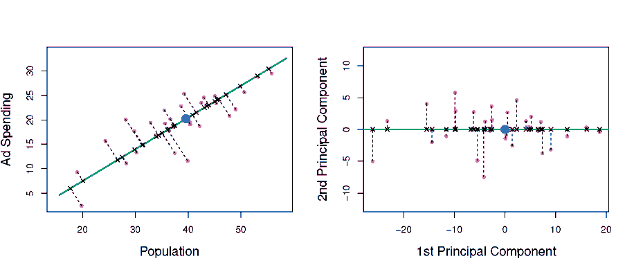
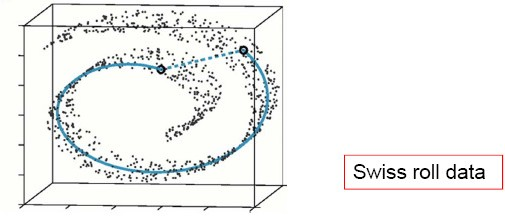
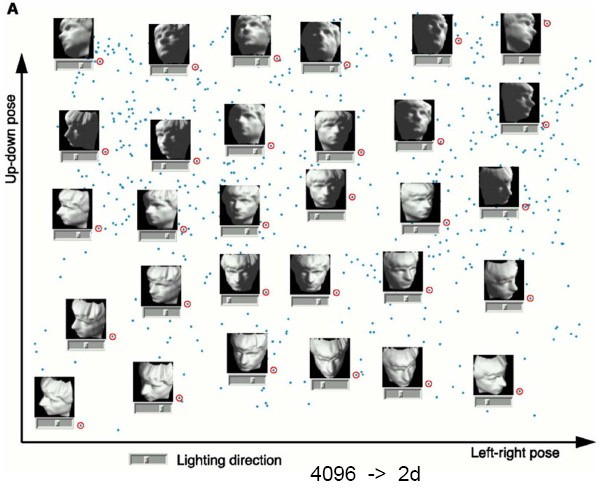

Some slides thanks to Xiaoli Fern (CS534, Oregon State Univ., 2011).
Some figures taken from "An Introduction to Statistical Learning, with applications in R" (Springer, 2013) with permission of the authors, G. James, D. Witten, T. Hastie and R. Tibshirani.
Many modern data domains involve huge numbers of features / dimensions
Documents: thousands of words, millions of bigrams
Images: thousands to millions of pixels
Genomics: thousands of genes, millions of DNA polymorphisms
High dimensionality has many costs
Redundant and irrelevant features degrade performance of some ML algorithms
Difficulty in interpretation and visualization
Computation may become infeasible
what if your algorithm scales as O( n3 )?
Curse of dimensionality

Feature selection
Select subset of existing features (without modification)
Lecture 5 and Project 1
Model regularization
L2 reduces effective dimensionality
L1 reduces actual dimensionality
Combine (map) existing features into smaller number of new features
Linear combination (projection)
Nonlinear combination
Linearly project n-dimensional data onto a k- dimensional space
k < n, often k << n
Example: project space of 104 words into 3 dimensions
There are infinitely many k-dimensional subspaces we can project the data onto.
Which one should we choose?
Best k-dimensional subspace for projection depends on task
Classification: maximize separation among classes
Example: linear discriminant analysis (LDA)
Regression: maximize correlation between projected data and response variable
Example: partial least squares (PLS)
Unsupervised: retain as much data variance as possible
Example: principal component analysis (PCA)
Consider data without class labels
Try to find a more compact representation of the data

Widely used method for unsupervised, linear dimensionality reduction
GOAL: account for variance of data in as few dimensions as possible (using linear projection)
Geometric picture of principal components (PCs)

First PC is the projection direction that maximizes the variance of the projected data
Second PC is the projection direction that is orthogonal to the first PC and maximizes variance of the projected data
Find a line, such that when the data is projected onto that line, it has the maximum variance.
Find a second line, orthogonal to the first, that has maximum projected variance.

Repeat until have k orthogonal lines
The projected position of a point on these lines gives the coordinates in the k-dimensional reduced space.
Mean center the data
Compute covariance matrix
Calculate eigenvalues and eigenvectors of
Eigenvector with largest eigenvalue 1 is 1st principal component (PC)
Eigenvector with kth largest eigenvalue k is kth PC
k / i i = proportion of variance captured by kth PC
Full set of PCs comprise a new orthogonal basis for feature space, whose axes are aligned with the maximum variances of original data.
Projection of original data onto first k PCs gives a reduced dimensionality representation of the data.
Transforming reduced dimensionality projection back into original space gives a reduced dimensionality reconstruction of the original data.
Reconstruction will have some error, but it can be small and often is acceptable given the other benefits of dimensionality reduction.
original data mean centered data with PCs overlayed
original data projected Into full PC space
original data reconstructed using only a single PC


A typical image of size 256 x 128 pixels is described by 256 x 128 = 32768 dimensions.
Each face image lies somewhere in this high- dimensional space.
Images of faces are generally similar in overall configuration, thus
They cannot be randomly distributed in this space.
We should be able to describe them in a much lower- dimensional space.
(Turk and Pentland 1991)

Helps reduce computational complexity.
Can help supervised learning.
Reduced dimension simpler hypothesis space.
Smaller VC dimension less risk of overfitting.
PCA can also be seen as noise reduction.
Caveats:
Fails when data consists of multiple separate clusters.
Directions of greatest variance may not be most informative (i.e. greatest classification power).
Practical issue: covariance matrix is n x n.
E.g. for image data = 32768 x 32768.
Finding eigenvectors of such a matrix is slow.
Singular value decomposition (SVD) to the rescue!
Can be used to compute principal components.
Efficient implementations available, e.g. MATLAB svd.
X = USVT

X = USVT
Create mean-centered data matrix X.
Solve SVD: X = USVT.
Columns of V are the eigenvectors of sorted from largest to smallest eigenvalues.
Select the first k columns as our k principal components.
Supervised alternative to PCA.
Attempts to find set of orthogonal directions that explain both response and predictors.
First direction:
Calculate simple linear regression between each predictor and response.
Use coefficients from these regressions to define first direction, giving greatest weight to predictors which are highly correlated with response (large coefficients).
Subsequent directions:
Repeat regression calculations on residuals of predictors from preceding direction.
solid line – first PLS direction dotted line – first PCA direction
Popular in chemometrics.
Large number of variables from digitized spectrometry signals.
In regression tasks, PLS doesn’t necessarily perform better than ridge regression or pre- processing with PCA.
Less bias, but may increase variance.
High-dimensional data is projected onto low- dimensional subspace using a random matrix whose columns have unit length.
No attempt to optimize a criterion, e.g. variance.
Preserves structure (e.g. distances) of data with minimal distortion.
Computationally cheaper than PCA.
Shown to be competitive with PCA for dimensionality reduction in several tasks
Face recognition
Document retrieval
Also useful for producing perturbed datasets as inputs for ensembles.
Data often lies on or near a nonlinear low- dimensional surface
Such low-dimensional surfaces are called
manifolds.

SQMAP·: lso,1m1e'tric Feature M. a1p,p,
a1p,p, in1
in1 g
g
('Tenenbau1m et al. 2000)
·• A nonlinear me· thod for di1
thod for di1 mensionality reduction
mensionality reduction
·• Preserves the global nonlinea,rgeometry of tl he data by preserving th,egeodesic distanoes
he data by preserving th,egeodesic distanoes
JI
t
\
' ....
.........
· • Geodesic: originaU,ygeodesic 1means tlhe sl hortest route between two points on tlhe su1riace of tlhe 1manifold
hortest route between two points on tlhe su1riace of tlhe 1manifold
IllSOIMAP
Two1 s'tep,s
Approximate the geodesic distance between every pair of points in tl he data
The m1aniJold is locally linear
Euclidean distance works welllll for points that are close1 enough
For the points that are far apart their geodesic distance can be approxim1ated by summing up local Euclidean distances
Find a Euclidean 1mapping of tlhe data that preserves
·tlhe geodesic distance

,Geodesic 01istan1ce
Constru,  ct ,
ct , a graph by
a graph by
-,connecting i and j if
,. d(i, j) < E (f:-isomap) or
, . iis one offs k nearest nei,ghlbors (k-isomap)
. iis one offs k nearest nei,ghlbors (k-isomap)
- Sett. he edge weight equal d(i, j) - IEuclide, an distance,
he edge weight equal d(i, j) - IEuclide, an distance,


Com1pute th1e G1eodesii,c diistan,ce b1etween

any two poiints ,as the shorte,st p,,ath distance,


C101 m
m 11p1ute tlh,e l,1ow-D,ii1m1,e1nsiio1n,all M,a1
11p1ute tlh,e l,1ow-D,ii1m1,e1nsiio1n,all M,a1 p1
p1 pii1
pii1 ng
ng


We can use Multi-1D,imensional scaling (MID,S,), a
class of statistical t.echniques t.hat
,Given1::
n x n matrix o,f dissimilarities between n objects


Ou1tpu1ts:: a coordinat.e co1nfiguratio1n of the dat.a in a low-dimensional sp,ace Rd who1se !Euclidean distances closely match given dissimilarit,ies.
.(.\.],
(\]
-
0
0-
.,.
L■ 'Ii,
0:::
V,
V,
■-
en
C
0
a_
<(
-
0en
m
u_..... . ........._......... ... I

t-Stochastic neighbor embedding (t-SNE)

Visualizes high-dimensional data in a 2- or 3- dimensional map.
Better than existing techniques at creating a single map that reveals structure at many different scales.
Particularly good for high-dimensional data that lie on several different, but related, low- dimensional manifolds.
Example: images of objects from multiple classes seen from multiple viewpoints.
t-SNE ISOMAP
“Dimensionality reduction: a comparative review” (mostly nonlinear methods)
MATLAB toolbox for dimensionality reduction